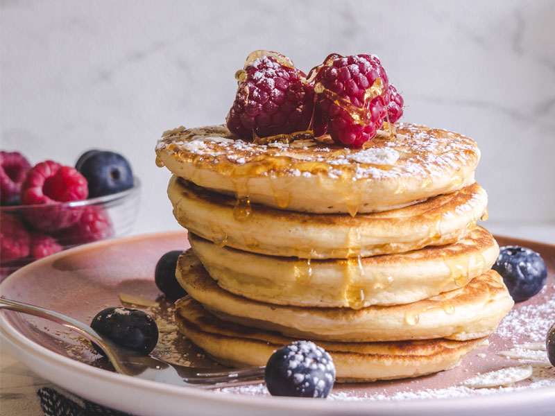

Pancakes - Pannekaker

Traditional Norse pancakes, also known as "Pannkakor" in Swedish or "Pannekaker" in Norwegian.
Ingredients
- 1 cup all-purpose flour
- 2 tablespoons granulated sugar
- 1/2 teaspoon salt
- 2 large eggs
- 1 1/4 cups milk
- 1/4 cup sparkling water
- 2 tablespoons unsalted butter, melted
Steps
- In a large mixing bowl, whisk together the flour, sugar, and salt.
- In a separate bowl, beat the eggs until smooth.
- Add the milk and whisk until well combined.
- Gradually pour the egg and milk mixture into the dry ingredients while whisking continuously. Make sure to mix until you have a smooth, lump-free batter.
- Stir in the melted butter into the batter. Mix until everything is well incorporated.
- Let the batter rest for about 15-20 minutes. This resting time allows the gluten to relax and results in softer pancakes.
- Heat a non-stick skillet or griddle over medium heat. You can lightly grease the surface with butter or cooking spray if needed.
- Pour a ladleful of batter onto the hot skillet. Tilt the skillet gently to spread the batter into a circular shape.
- Cook the pancake for about 1-2 minutes on one side or until bubbles form on the surface and the edges look set.
- Carefully flip the pancake using a spatula and cook the other side for another 1-2 minutes until golden brown.
- Repeat the process with the remaining batter, adding more butter or cooking spray to the skillet as needed.
- Serve the warm pancakes with your favorite toppings. Traditional toppings include lingonberry jam, fresh berries, whipped cream, or a sprinkle of powdered sugar.
Enjoy your delicious and fluffy Norse pancakes!
They are perfect for breakfast, brunch, or as a sweet treat any time of the day.
back